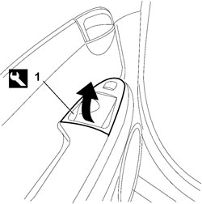
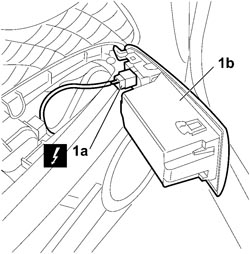

7010M10 REAR SIDE DOOR ELECTRICALLY OPERATED WINDOW SWITCH (ONE), LEFT OR RIGHT - R.R
- Path
- Procedures > 70 FITTINGS > 7010 PASSENGER COMPARTMENT REAR SIDE DOORS > 7010M REAR SIDE DOOR ELECTRIC WINDOWS > 7010M10 REAR SIDE DOOR ELECTRICALLY OPERATED WINDOW SWITCH (ONE), LEFT OR RIGHT - R.R
- Kind
- repair procedure (removal / refitting; the operation number is the code)
- Applies to
- all engines; all production periods
- Interactive page
- https://sloeber94.github.io/elrnDB-fCrm/en/#/194000929
Applies to: all engines; all production periods
 Removing
Removing
 Refitting
Refitting- Open the rear side door.
- Turn the ignition key to the OFF position.
- Disconnect the negative battery terminal.
Description | Connector | |
|---|---|---|
BATTERY |
1. Apply the appropriate tool to the rear and prise out the window switch unit.
Tool | Description | Function | Validity |
|---|---|---|---|
1878077000 | Knife | Retainer removal |

Applies to: all engines; all production periods
1. Disconnect the electrical connection (1a) and recover the window switch unit (1b).
Description | Connector | |
|---|---|---|
1a | LEFT REAR DOOR WINDOW SWITCH |
Description | Connector | |
|---|---|---|
1a | RIGHT REAR DOOR WINDOW SWITCH |

Applies to: all engines; all production periods
Refitting
Removing- Check that the window control switch unit is not damaged and check that the retaining clips are intact and correctly positioned.
- Connect the electrical connection for the window switch.
Description | Connector | |
|---|---|---|
LEFT REAR DOOR WINDOW SWITCH |
Description | Connector | |
|---|---|---|
RIGHT REAR DOOR WINDOW SWITCH |
- Position the window control switch unit in its seat from the front, then press on the retaining clip areas from the rear.
- Connect the negative battery terminal.
Description | Connector | |
|---|---|---|
BATTERY |
Topics linked from this page (3)
- A001 BATTERY
- H053 ELECTRIC WINDOW SWITCH ON LEFT REAR DOOR
- H054 ELECTRIC WINDOW SWITCH ON RIGHT REAR DOOR
Topics that link to this page (19)
- 5505B21 REAR DOOR WIRING (ONE) LEFT OR RIGHT - R.R
- 5570T94 REAR TWEETER (ONE), LH OR RH - R R
- 5570T96 REAR SIDE SPEAKER (ONE), LEFT OR RIGHT- R.R
- 7010A09 REAR SIDE DOOR INTERIOR SUPPORT FRAME - R.R.
- 7010A28 REAR SIDE DOOR OPENING LIMITER - R.R
- 7010C11 REAR SIDE DOOR EXTERIOR HANDLE - R.R
- 7010C53 INTERIOR HANDLE FOR REAR DOOR OPENING MECHANISM (ONE) LEFT OR RIGHT - R.R.
- 7010C60 CONNECTION LINK BETWEEN INTERIOR OPENING MECHANISM AND REAR SIDE DOOR LOCK (ONE), LH OR RH - R&R
- 7010C65 CONNECTING ROD FROM EXTERIOR HANDLE TO REAR SIDE DOOR LOCK - R.R.
- 7010D15 REAR SIDE DOOR DESCENDING WINDOW GLASS (ONE), LEFT OR RIGHT - R.R
- 7010D30 REAR SIDE DESCENDING WINDOW GLASS SCRAPER (INNER) R R
- 7010E10 REAR SIDE DOOR INNER PANEL - R.R. OR REPLACE
- 7010E20 REAR SIDE DOOR SUN CURTAIN (ONE), LH OR RH - R R
- 7010E22 GRILLE FOR RADIO SYSTEM ON REAR DOOR PANEL (ONE) LEFT OR RIGHT - R.R.
- 7010M21 REAR SIDE DOOR ELECTRICALLY-OPERATED WINDOW, LEFT OR RIGHT - R.R.
- 7010M26 ELECTRIC WINDOW OPENING MECHANISM FOR ONE REAR DOOR LH OR RH - R.R
- 7010N21 REAR SIDE DOOR LOCK MOTOR/LOCK ASSEMBLY, LEFT OR RIGHT - R.R
- 7205E38 STRIPPING REAR SIDE DOOR
- 7205E39 STRIPPING REAR SIDE DOOR INTERIOR SUPPORT FRAME